Volver al grupo

Data Automation · SaaS B2B
Software que centraliza y automatiza los datos de marketing para agencias en todo el mundo. Una sola fuente de verdad, en tiempo real.
Data Automation · SaaS B2B
Software que centraliza y automatiza los datos de marketing para agencias en todo el mundo. Una sola fuente de verdad, en tiempo real.
Automatización de la recolección y unificación de datos, ahorrando tiempo y recursos.
Integración sencilla con herramientas populares como Google Sheets, Looker Studio, BigQuery y Claude.
Reducción de la dependencia de procesos manuales y errores humanos.
Mejora de la performance al asegurar la calidad y disponibilidad de los datos.
Migró sus plataformas de datos y aceleró el análisis para un equipo de 56 personas.
Ver el caso completoAhorra 20 horas semanales: el equipo pasó de armar reportes a hacer estrategia.
Ver el caso completo
Agencia de marketingDemocratizó el acceso a los datos y eliminó la dependencia de una sola persona.
Ver el caso completoWe Are Blend, Clica, Kin Comm y más agencias y e-commerce que automatizaron sus datos con Detrics.
Ver todos los casos¿Tus datos de marketing, en una sola fuente de verdad?
Hablemos de tu proyecto